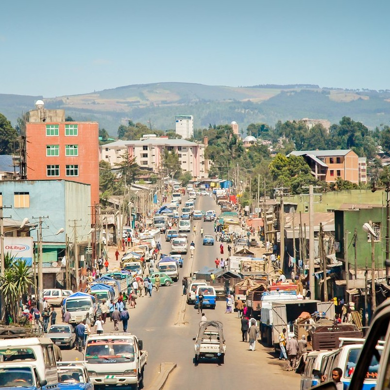
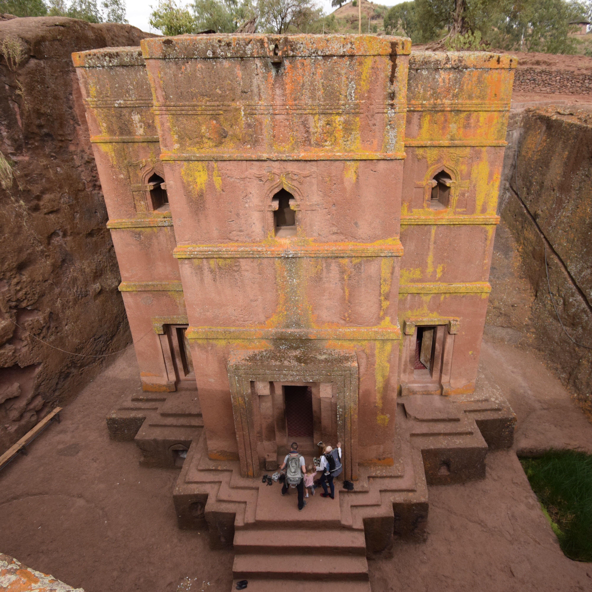

(1).jpg)
Ethiopia
From Lalibela's Rock-Hewn Churches to the Mysteries of Axum
My Ethiopian odyssey commenced in Addis Ababa, the vibrant capital city that gracefully blends modernity and tradition. The National Museum held me captive with the enigmatic smile of Lucy, the ancient hominid whose remains shed light on human evolution. As I gazed at her fossilized bones, I couldn't help but marvel at the depth of Ethiopia's historical significance. In Addis Ababa, I embarked on a culinary adventure, tasting the diverse flavors of Ethiopian cuisine. At a local restaurant, I savored injera, a sourdough flatbread, topped with spicy stews known as wats. The communal dining experience, where we shared a platter, highlighted the warmth of Ethiopian hospitality and the rich tapestry of flavors.
 My journey took me to the mystical town of Lalibela, home to a cluster of rock-hewn churches carved deep into the earth. As I descended into the dimly lit tunnels and chambers, I felt a profound connection to the devotion and craftsmanship that birthed these architectural wonders. The intricate carvings and religious symbolism in each church were a testament to the unwavering faith of the Ethiopian people.In Lalibela, I joined a traditional Ethiopian coffee ceremony, a ritual that is both sacred and social. The aromatic coffee beans roasted before my eyes, and the rich brew was served with ceremony and hospitality that embodied Ethiopian culture. It was an opportunity to connect with the locals and understand the importance of coffee in Ethiopian society.
Axum, the fabled capital of the Aksumite Empire, beckoned with its enigmatic obelisks and ruins. The towering steles, some reaching over 70 feet in height, stood as silent guardians of a bygone era. Exploring the ancient tombs and inscriptions, I marveled at the enduring legacy of this once-mighty civilization. The mysteries of Aksum's decline and the legend of the Ark of the Covenant added layers of intrigue to this historical site. In Axum, I delved into the world of traditional Ethiopian music and dance. Accompanied by the mesmerizing rhythms of the krar, a lyre-like instrument, and the spirited movements of the dancers, I experienced the soul-stirring beauty of Ethiopia's artistic heritage. The music conveyed stories of triumph and sorrow, providing a deeper appreciation for the country's cultural richness.
Leaving the historical sites behind, I ventured into the rugged beauty of the Simien Mountains, a UNESCO World Heritage Site. Trekking amidst the dramatic landscapes, I encountered gelada monkeys, ibex, and ethereal vistas that seemed straight out of a dream. The challenges of the trek were rewarded with breathtaking views of deep canyons and jagged peaks. In the Simien Mountains, I joined a local guide for a traditional village visit. Sharing stories around a campfire, I learned about the challenges and resilience of the mountain communities, gaining insight into their way of life. The simplicity of their existence in such a majestic landscape left a profound impression on me.
 My journey continued to Gondar, a city renowned for its royal castles and architectural marvels. The medieval castles and churches, with their ornate frescoes, transported me to a time when emperors ruled from this highland citadel. The architecture reflected both Ethiopian and European influences, showcasing the country's rich historical tapestry. In Gondar, I had the privilege of witnessing a timket (Epiphany) celebration, one of Ethiopia's most significant religious festivals. The vibrant processions, the rhythmic chants, and the spiritual fervor of the participants left an indelible mark on my heart. It was a moment of cultural immersion and spiritual awakening.
My Ethiopian odyssey concluded in Bahir Dar, a city on the shores of Lake Tana, the source of the Blue Nile. A boat journey on the tranquil waters of the lake took me to ancient monasteries, adorned with colorful frescoes and rich history. Visiting these remote island monasteries allowed me to witness a different aspect of Ethiopian spirituality. In Bahir Dar, I attended a traditional Azmari music performance, where the lyrical melodies and poetic lyrics captivated my senses. The intimate setting and soulful tunes provided a deeper connection to Ethiopia's musical heritage. It was a fitting farewell to a land where music and culture run deep in the veins of its people.
As I reflect on my Ethiopian odyssey, I am humbled by the depth of history, culture, and natural beauty this country offers. From the bustling streets of Addis Ababa to the hidden monasteries on Lake Tana, each destination revealed a different facet of Ethiopia's enduring allure. The journey was a profound exploration of a land where time seems to stand still, and where the echoes of ancient civilizations still resonate in the present.
Join me in my future travels as I continue to explore the rich tapestry of cultures and landscapes across Africa and beyond. Until next time, keep your wanderlust alive and your heart open to the wonders of the world.